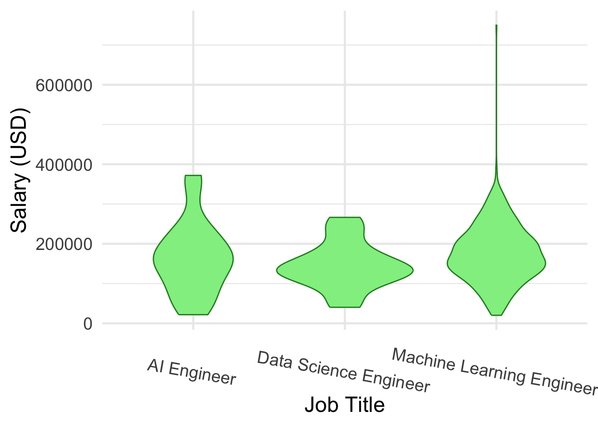

## This is the code to set up the static graphs adapted from my Shiny App
#/ warning: false
#/ output: false
library(tidyverse)
options(scipen = 100)
theme_set(theme_minimal())
salary <- utils::read.csv(here::here("data/v7_Latest_Data_Science_Salaries.csv"), stringsAsFactors = TRUE) |>
filter(!is.na(Salary.in.USD))
salary = salary |>
mutate(Job.Category = case_when(str_detect(Job.Title, pattern = "AI ") == TRUE ~ "Artificial Intelligence",
str_detect(Job.Title, pattern = "Autonomous") == TRUE ~ "Artificial Intelligence",
str_detect(Job.Title, pattern = "Computer Vision") == TRUE ~ "Artificial Intelligence",
str_detect(Job.Title, pattern = "NLP") == TRUE ~ "Artificial Intelligence",
str_detect(Job.Title, pattern = "Prompt Engineer") == TRUE ~ "Artificial Intelligence",
str_detect(Job.Title, pattern = "BI ") == TRUE ~ "Business Intelligence",
str_detect(Job.Title, pattern = "Business") == TRUE ~ "Business Intelligence",
str_detect(Job.Title, pattern = "Data Product") == TRUE ~ "Business Intelligence",
str_detect(Job.Title, pattern = "Financ") == TRUE ~ "Business Intelligence",
str_detect(Job.Title, pattern = "Data Sci") == TRUE ~ "Data Science",
str_detect(Job.Title, pattern = "Data Lead") == TRUE ~ "Data Science",
str_detect(Job.Title, pattern = "Data Manage") == TRUE ~ "Data Science",
str_detect(Job.Title, pattern = "Data Specialist") == TRUE ~ "Data Science",
str_detect(Job.Title, pattern = "Head of Data") == TRUE ~ "Data Science",
str_detect(Job.Title, pattern = "ML") == TRUE ~ "Machine Learning",
str_detect(Job.Title, pattern = "Machine") == TRUE ~ "Machine Learning",
str_detect(Job.Title, pattern = "Deep Learning") == TRUE ~ "Machine Learning",
str_detect(Job.Title, pattern = "Big ") == TRUE ~ "Big Data",
str_detect(Job.Title, pattern = "Cloud") == TRUE ~ "Cloud Data",
str_detect(Job.Title, pattern = "Data Architect") == TRUE ~ "Data Organization",
str_detect(Job.Title, pattern = "Data Engineer") == TRUE ~ "Data Organization",
str_detect(Job.Title, pattern = "Data Developer") == TRUE ~ "Data Organization",
str_detect(Job.Title, pattern = "Data Infrastructure") == TRUE ~ "Data Organization",
str_detect(Job.Title, pattern = "ETL ") == TRUE ~ "Data Organization",
str_detect(Job.Title, pattern = "Data Operations") == TRUE ~ "Data Operations",
str_detect(Job.Title, pattern = "DevOps") == TRUE ~ "Data Operations",
str_detect(Job.Title, pattern = "Data Integration") == TRUE ~ "Data Operations",
str_detect(Job.Title, pattern = "Data Strateg") == TRUE ~ "Data Operations",
str_detect(Job.Title, pattern = "Decision Scientist") == TRUE ~ "Data Operations",
str_detect(Job.Title, pattern = "Data Model") == TRUE ~ "Data Modeling",
str_detect(Job.Title, pattern = "Data Quality") == TRUE ~ "Data Quality",
str_detect(Job.Title, pattern = "Data Vis") == TRUE ~ "Data Visualization",
str_detect(Job.Title, pattern = "Research Analyst") == TRUE ~ "Research",
str_detect(Job.Title, pattern = "Research Engineer") == TRUE ~ "Research",
str_detect(Job.Title, pattern = "Research Scientist") == TRUE ~ "Research",
str_detect(Job.Title, pattern = "Applied Scientist") == TRUE ~ "Research",
str_detect(Job.Title, pattern = "Analy") == TRUE ~ "Data Analytics")) |>
mutate(Company.Location = as.character(Company.Location),
Employment.Type = as.character(Employment.Type),
Experience.Level = fct_relevel(Experience.Level, c("Entry", "Mid", "Senior", "Executive")),
Company.Size = fct_relevel(Company.Size, c("Small", "Medium", "Large")))Abstract
For this final project, I made a Shiny App to look at job salaries in the field of data science and other related fields. This project is of an exploratory nature, thus there is no one driving research question I aimed to answer. Instead, my goal was to provide an app that allows the user to visualize any trends they may be interested in, giving the user the autonomy to explore the data in any way they choose. This high degree of interactivity, however, makes the process of “data storytelling” nearly impossible. However, in this report, I will highlight three questions of interest with the hopes of providing insight towards the use and interpretation of the app. The case studies presented in this report aim to examine the distribution of pay for data scientists starting their careers, to visualize the increasing trend in data analytics jobs over time, and to emphasize the spread in salaries for engineering positions of different specialties.
Introduction
The dataset I used in this project is called Latest Data Science Job Salaries, published on Kaggle by Sourav Banerjee: https://www.kaggle.com/datasets/iamsouravbanerjee/data-science-salaries-2023. These data encompass job salary data for the field of data science and other related fields through the years 2020 through early 2024. Most of the salary data comes from the United States of America, but also does include data from 74 other countries across the world. This dataset has been instrumental in my understanding of how the field of data science and its associated compensations have changed over recent years.
Variables of Interest
Salary.in.USD: job salary converted to USDJob.Title: job position titleJob.Category: category of job position (added by myself)Experience.Level: factor of individual’s experience level (Entry, Mid, Senior, Executive)Company.Size: factor of the company’s size (Small, Medium, Large)Company.Location: geographic location of the companyEmployment.Type: factor of job position type (Full-Time, Part-Time, Freelance)Year: year of employment (2020-2024)
Questions of Interest
- What is the distribution of salary for Data Scientist Entry- and Mid-level positions?
- How has the experience level and pay of Data Analysts changed over the course of this dataset (2020 through early 2024)?
- For the Engineer position, how does the shape of the pay differ for different specialties (AI Engineer vs. Data Science Engineer vs. Machine Learning Engineer)?
Case Study Visuals
1. What is the distribution of salary for Data Scientist Entry- and Mid-level positions?
ds_static = salary |>
filter(Job.Title == "Data Scientist") |>
filter(Experience.Level %in% c("Entry", "Mid"))
ggplot(data = ds_static, aes(x = Salary.in.USD)) +
geom_histogram(bins = 15, col = "lightblue4", fill = "lightblue") +
labs(title = glue::glue("Entry and Mid Level Data Scientist Salaries")) +
theme_minimal(base_size = 18) +
labs(x = "Salary (USD)")This histogram of data scientist salaries shows the right-skewed trend of salaries for entry and mid level positions. You can tell that the majority of the jobs offer a yearly salary anywhere between roughly $80,000 and $120,000 for data scientists on the lower side of the experience spectrum. There are a few outliers to the right of the graph, thus causing the right skewness: there are a couple indivials getting paid over $300,000!
2. How has the experience level and pay of Data Analysts changed over the course of this dataset (2020 through early 2024)?
da_static = salary |>
filter(Job.Title == "Data Analyst")
ggplot(data = da_static, aes(x = Salary.in.USD, color = Experience.Level)) +
geom_freqpoly(linewidth = 1) +
facet_wrap(~ Year) +
labs(title = glue::glue("Salary for Data Analyst Jobs")) +
theme_minimal(base_size = 12) +
labs(x = "Salary (USD)", color = "Experience Level") +
scale_color_viridis_d() +
theme(axis.text.x = element_text(angle = -45))This faceted frequency plot can be used to visualize the trend in data analysts over the past 4 years. There is not much data in 2020 and 2021, but you can still see a small increase in the number of data analysts between these two years; note there is an introduction of senior level positions in the year 2021. The increase in the number of data analysts (for all four experience levels) in 2022 is great, and this trend is magnified in 2023. It is interesting to note that the shape of senior level data analysts in 2022 and 2023 is essentially normally distributed with a clear center salary that is visually higher than the other three experience levels in the visual.
3. For the Engineer position, how does the shape of the pay differ for different specialties (AI Engineer vs. Data Science Engineer vs. Machine Learning Engineer)?
violin_df = salary |>
filter(Job.Title %in% c("AI Engineer", "Data Science Engineer", "Machine Learning Engineer"))
ggplot(data = violin_df, aes(x = Job.Title, y = Salary.in.USD)) +
geom_violin(fill = "lightgreen", color = "forestgreen") +
labs(x = "Job Title", y = "Salary (USD)") +
theme_minimal(base_size = 18) +
theme(axis.text.x = element_text(angle = -10))
The centers of these three engineering specialties are all roughly comparable, sitting at just under a $200,000 yearly salary. However, the range of salaries for AI Engineers and Machine Learning Engineers appears to be significantly wider than the range of Data Science Engineers: AI Engineers and Machine Learning Engineers are making up to about $380,000 (note there is an outlier where a Machine Learning Engineer is making about $750,000) while Data Science Engineers are only making up to $280,000. That’s a whole $100,000 less! Another visual aspect to take away here is the shape of the data. The shape of Data Science Engineers and Machine Learning Engineers (ignoring the outlier) appear to be almost perfectly normally distributed while there may be a small issue with right skewness.
Conclusions
These three visuals hopefully provide some guidance and insight into how my Shiny App can be used to visualize different patterns in the data. The three questions of interest in this short report are just a glimpse into the world of questions that can be answered with data like this.
As far as limitations go, this dataset is relatively small and not comprehensive at all. If I had more time, I could search for more comprehensive datasets to conduct more research on. I would find it particularly interesting to visualize trends in salaries on a longer time frame (i.e., to look at COVID effects on job salaries). Another direction I could have taken these data is a logistic regression approach to try and predict experience based on salary, for example.
Link to the Shiny App: https://brodypinto.shinyapps.io/DATA334_final_project/